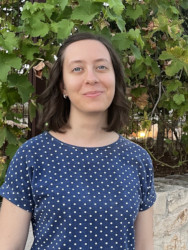
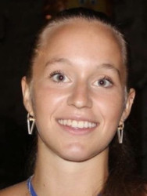

Current lab members
Marco Tettamanti (PI)
Marco Tettamanti's institutional webpageMarco Tettamanti's personal webpage
Desiré Carioti (PhD)
Desiré Carioti's personal webpageProjects: Longitudinal assessment of multidomain reading-free neurocognitive markers for early detection of Developmental Dyslexia (FREE-DD).
Barbara Cassone (PhD student)
 Barbara Cassone's personal webpageProjects: The neural basis of semantic representations in figurative language.
Carola Parisi (MSc student)
Project: Longitudinal assessment of multidomain reading-free neurocognitive markers for early detection of Developmental Dyslexia (FREE-DD).
Carola Giorchino Ghio (MSc student)
Project: Neurocognitive basis of morphosyntactic deficits: speech analysis and anatomo-functional correlations in aphasic patients.
Camilla Defendi (MSc student)
Project: An fMRI study on the role of morphology in written novel word processing.
Ennio Lauretta (MSc student)
Project: An fMRI study on narrative language processing.
Ester Corigliano (MSc student)
Project: Project: Longitudinal assessment of multidomain reading-free neurocognitive markers for early detection of Developmental Dyslexia (FREE-DD).
Carolina Sassi (MSc student)
Project: The neural basis of semantic representations in figurative language.
Former lab members
Marta Ghio
Eleonora Bartoli
Matilde Vaghi
Francesca Conca
Francesca Forlè
Cristina Cara